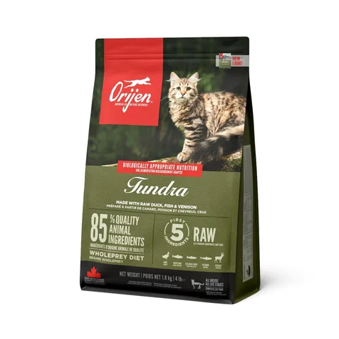

ORIJEN
ORIJEN Tundra
乾飼料・無穀・野味配方・1.8kg／5.4kg 袋
比歷史低價高 75%
90 天價格水準：偏高（最低 €13.93/kg ～ 最高 €24.42/kg，依過去 19 天每日最低價）
商店報價（依每單位價排序）
| 店家 | 規格 | 總價 | 每單位價 | 條件 | 購買 |
|---|---|---|---|---|---|
| Petfooddiscount.nl | 1x1.8kg | €43.95 | €24.42/kg | 運費 €4.95 2026-11-28 live browser：Tundra 1.8kg €43.95（建議價 €49.99），價格不變，有貨；免運 €49。 | 前往 → |
| Pharmapets | 1x5.4kg | €75.20 | €13.93/kg | 滿 €39 免運・運費 €3.99 沿用 2026-11-07 報價 | 前往 → |
| Amazon.nl（賣家 Plein） | 1x5.4kg | €80.55 | €14.92/kg | 免運 經 CashbackXL 返現 €5.32 沿用 2026-11-07 報價 | 前往 → |
| Petgamma | 1x5.4kg | €84.35 | €15.62/kg | 滿 €50 免運 經 ShopBuddies 返現 €3.64 沿用 2026-11-07 報價 | 前往 → |
| Petgamma | 1x1.8kg | €38.34 | €21.30/kg | 滿 €50 免運 經 ShopBuddies 返現 €1.65 沿用 2026-11-07 報價 | 前往 → |
| Medpets | 1x1.8kg | €42.25 | €23.47/kg | 滿 €69 免運・運費 €4.95・最低訂單 €14.95 需訂閱定期配送 沿用 2026-11-17 報價 2026-11-17 live browser：1.8kg €44.95 一次價／Herhaal €42.25，有貨；與 2026-11-15 相同，無變化。 | 前往 → |
| Pharmapets | 1x1.8kg | €42.29 | €23.49/kg | 滿 €39 免運・運費 €3.99 沿用 2026-11-07 報價 | 前往 → |
| bestpetfoods | 1x5.4kg | €78.80 | €14.59/kg | €50 起免運，否則 €5.95；定期配送 95 折不計返現 沿用 2026-11-15 報價 未核實 2026-11-15 curl 重抓頁面，確認頁面仍含上次價格字串（未逐變體結構化解析、庫存／運費／促銷沿用 11-13）；價格視為同 11-13；返現率沿用（ShopBuddies zooplus 1.33%/新客8%、Medpets 4%、Brekz 3.5%、YesCashback bestpetfoods 4% 今日重查未變；CashbackXL 頁為 JS 未能讀取＝未確認） | 前往 → |
| Brekz | 2x5.4kg | €176.58 | €16.35/kg | 滿 €35 免運 沿用 2026-11-15 報價 未核實 2026-11-15 curl 重抓頁面，確認頁面仍含上次價格字串（未逐變體結構化解析、庫存／運費／促銷沿用 11-13）；價格視為同 11-13；返現率沿用（ShopBuddies zooplus 1.33%/新客8%、Medpets 4%、Brekz 3.5%、YesCashback bestpetfoods 4% 今日重查未變；CashbackXL 頁為 JS 未能讀取＝未確認） | 前往 → |
| Brekz | 1x5.4kg | €88.79 | €16.44/kg | 滿 €35 免運 沿用 2026-11-15 報價 未核實 2026-11-15 curl 重抓頁面，確認頁面仍含上次價格字串（未逐變體結構化解析、庫存／運費／促銷沿用 11-13）；價格視為同 11-13；返現率沿用（ShopBuddies zooplus 1.33%/新客8%、Medpets 4%、Brekz 3.5%、YesCashback bestpetfoods 4% 今日重查未變；CashbackXL 頁為 JS 未能讀取＝未確認） | 前往 → |
| Zoofera | 1x5.4kg | €105.18 | €19.48/kg | 免運 沿用 2026-11-15 報價 未核實 2026-11-15 curl 重抓頁面，確認頁面仍含上次價格字串（未逐變體結構化解析、庫存／運費／促銷沿用 11-13）；價格視為同 11-13；返現率沿用（ShopBuddies zooplus 1.33%/新客8%、Medpets 4%、Brekz 3.5%、YesCashback bestpetfoods 4% 今日重查未變；CashbackXL 頁為 JS 未能讀取＝未確認） | 前往 → |
| Amazon.nl（賣家 Plein） | 1x1.8kg | €35.52 | €19.73/kg | 免運 經 CashbackXL 返現 €2.35 沿用 2026-11-07 報價 缺貨 2026-11-07 No featured offers available（價格為上次） | 前往 → |
| Brekz | 1x1.8kg | €44.25 | €24.58/kg | 滿 €35 免運 沿用 2026-11-15 報價 未核實 2026-11-15 curl 重抓頁面，確認頁面仍含上次價格字串（未逐變體結構化解析、庫存／運費／促銷沿用 11-13）；價格視為同 11-13；返現率沿用（ShopBuddies zooplus 1.33%/新客8%、Medpets 4%、Brekz 3.5%、YesCashback bestpetfoods 4% 今日重查未變；CashbackXL 頁為 JS 未能讀取＝未確認） | 前往 → |
| Huisdieren.nl | 1x1.8kg | €44.25 | €24.58/kg | 滿 €59 免運・運費 €6.95 沿用 2026-11-15 報價 缺貨 2026-11-15 curl 重抓頁面，確認頁面仍含上次價格字串（未逐變體結構化解析、庫存／運費／促銷沿用 11-13）；價格視為同 11-13；返現率沿用（ShopBuddies zooplus 1.33%/新客8%、Medpets 4%、Brekz 3.5%、YesCashback bestpetfoods 4% 今日重查未變；CashbackXL 頁為 JS 未能讀取＝未確認） | 前往 → |
| Zoofera | 1x1.8kg | €46.95 | €26.08/kg | 免運 沿用 2026-11-15 報價 未核實 2026-11-15 curl 重抓頁面，確認頁面仍含上次價格字串（未逐變體結構化解析、庫存／運費／促銷沿用 11-13）；價格視為同 11-13；返現率沿用（ShopBuddies zooplus 1.33%/新客8%、Medpets 4%、Brekz 3.5%、YesCashback bestpetfoods 4% 今日重查未變；CashbackXL 頁為 JS 未能讀取＝未確認） | 前往 → |